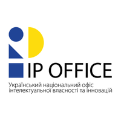
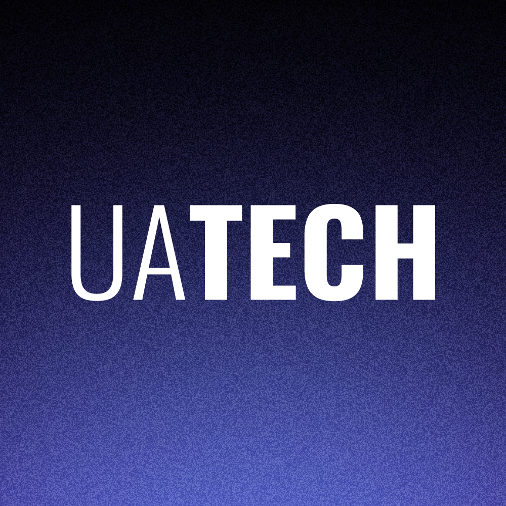
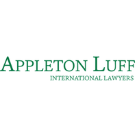
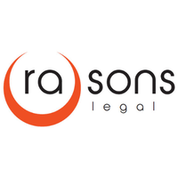

Supporting Ukrainian technology companies in scaling into European and US markets, and enabling European industrial players to access and execute funded reconstruction projects in Ukraine.
Get in touchUkrainian tech companies face structural barriers when entering Western markets
Ukraine has built one of Europe's most dynamic tech ecosystems: over 2,600 active startups across defence and dual use, AI, software, energy, cleantech, medtech, agritech and more. These companies were forged under wartime constraints: they ship fast, operate lean, and build for real world conditions from day one.
The next challenge is to convert this technical and operational validation into sustainable international growth. For many Ukrainian companies, entering European and US markets is not only a growth opportunity: it is a way to secure new revenue streams, diversify commercial exposure beyond the domestic market, access larger pools of capital and build long term resilience.
But expanding into Western markets is where execution gets harder. Finding the right investors, navigating regulatory and compliance requirements, identifying industrial or institutional partners, and building institutional credibility is a different challenge entirely from building a great product.
Ukraine's reconstruction is creating major opportunities for European industrial players
Ukraine's reconstruction is one of Europe's largest industrial and infrastructure challenges, with urgent needs across energy, transport, housing, infrastructure, construction and critical services.
The opportunity is increasingly funded through Ukrainian public priorities, European and bilateral mechanisms, export credit solutions, development finance institutions and blended finance instruments. But accessing these projects requires more than identifying demand or finding a local contact.
European companies need to understand where their solution fits, identify the right Ukrainian beneficiaries and delivery partners, structure a bankable project, align it with the relevant financing mechanism, and prepare the technical and financial documentation required to move from opportunity to implementation.
On both sides, the bottleneck is the same: turning opportunities into structured, bankable and deployable projects.
This is where ISKRA operates.
For Ukrainian tech companies scaling abroad
ISKRA helps Ukrainian technology companies turn domestic validation into revenue, capital and market presence in Europe and the United States.
We structure market entry by identifying the right geographies, buyers, partners and regulatory steps, then building a clear path toward first pilots or contracts.
We support financing by matching the company with relevant investors, public funding instruments and strategic partners aligned with its sector, stage and deployment needs.
We coordinate the legal, regulatory and commercial structuring required to operate credibly in Western markets, from vehicle setup and compliance to partner activation and follow on opportunities.
For European companies entering Ukraine
ISKRA helps European industrial players access and deliver funded reconstruction and infrastructure projects in Ukraine.
We identify concrete opportunities on the ground, aligned with Ukrainian priorities, available financing mechanisms and the company's capabilities.
We structure bankable projects by defining the scope, Ukrainian beneficiaries, local partners, delivery model and funding approach.
We prepare the technical and financial documentation required for relevant funding mechanisms and support coordination through implementation, until projects can move from proposal to delivery.

Valentin Jedraszyk
Founder
Founder of ISKRA, Valentin brings experience at the intersection of public institutions, industrial policy and international market expansion. At the French Ministry of the Economy, he designed and managed national emergency subsidy programs for French companies affected by the economic consequences of the war in Ukraine and coordinated a Presidential support program for the country's most innovative growth companies. He then led Bpifrance's North American operations in New York, supporting French startups, scale-ups and SMEs expanding into the US and Canadian markets through export finance, strategic positioning and institutional partnerships. He is a graduate of Sciences Po Paris.
Sofia Sapozhnykova
Partner
Sofia advises governments, development partners, and private sector actors on energy policy and the energy transition across multiple regions, as well as on Ukraine's reconstruction and investment mobilization. She supports project preparation at the public-private interface, combining stakeholder coordination with the alignment of regulatory and financing pathways (public, private, and blended). She has worked on projects funded by USAID, GIZ, IKI, and the French government, as well as within the Ukrainian public sector, and is a graduate of Sciences Po Paris.
Eliza Kurazova
Partner
Eliza has a cross-disciplinary background spanning corporate law, venture capital exposure and technology environments. She has worked in legal roles at Fives and Voodoo.io, and gained exposure to venture dynamics through the Paris Business Angels. Educated at Panthéon-Assas University (LLB) and 42 (Computer Science).

Ukrainian IP Office (UANIPIO)
Institutional Partner
The national authority responsible for intellectual property protection and innovation structuration in Ukraine. The partnership is reflected in the Lab2Market AgroTech Acceleration Program, supporting early-stage researchers in transitioning from scientific results to market-ready projects.

UAtech
Strategic Ecosystem Partner
A global platform connecting Ukrainian founders with international capital, partners and ecosystems through curated events and high-quality deal flow. Through initiatives such as Venture Night, UAtech bridges Ukrainian innovation and global markets.

Appleton Luff
International Legal Counsel
An international law firm specializing in international trade, export controls, sanctions and regulatory compliance. With offices across Europe and the United States, the firm advises companies in regulated and strategic sectors including defense and dual-use environments.

Rasons Legal
Ukrainian Legal Counsel
A Ukraine-based law firm specialized in corporate law, public sector projects and regulatory structuring. The firm supports international companies and investors operating in Ukraine, particularly in complex environments involving public stakeholders and reconstruction initiatives.
Let's work together
If you are a Ukrainian technology company preparing to scale into European and US markets, or a European industrial player looking to access and execute funded projects in Ukraine, get in touch.
Get in touch